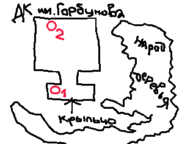

Заппа'zУх!Ой!
русский более или менее регулярный бюллетень для поклонников американского композитора
Frank'а Vincent'а Zappa'ы
Выпуск.11 (7 oктября 1998)
Нечитатель
Часть 1. Собственно нечитатель
Говорил правду, правду и только правду! За что слыл циником и сумасбродом.
|
FZ: ... I personally don't like to
read, and I've said in other interviews that, for me, reading is about
as much fun as standing in line at the passport window in the French
airport.
|
ФЗ: ... Сам я лично читать не люблю,
я уже говорил в каком-то другом моем
интервью, что для меня в этом процессе столько же радости, сколько
в ожидании своей очереди у паспортного окошка французкого аэропорта.
|
"The Frank Zappa Interview Picture Disk". Interview #2.
И тем не менее.
FZ: The book is written...
It's a book for people who hate to read...
|
ФЗ: Книга написана...
Книга для людей, которые ненавидят чтение...
|
ibid.
Ненавидят! Ух!
Впрочем, не сам процесс подсознательного грамматического разбора, (так,
листья - подлежащее, падали - сказуемое, с деревьев - дополнение.
Стояла золотая осень. Брррррр! Опять? Я об этом уже читал у Тургенева
еще в пятом, нет, четвертом классе), очевидное несоответствие затрат
результату.
Да, а вот для высокоорганизованных и целеустремленных членов
индустриального общества, не терпящих напрасных повторений, Фрэнк Винсент
Заппа младший второй из обычного, в принципе, словесного материала
смастерил целых два свободных от ваты художественного баласта
произведения книжного формата.
- Сам, мозолистыми пальцами концертирующего
гитариста ухая по компьютерной клавиатуре, накатал киносценарий
Them Or Us (The Book),
1984
Толстый (351 страница), большого формата том, изготовленный
полулюбительским способом, с использованием мелкокакающего точечного
принтера-шкрябалки.
История салонного итальянского вилончелиста
восемнадцатого века Франческо Заппы, путешествующего по
кинематографическим мирам современного нам композитора из
L.A.
Billy the Mountain соседствует со Spider'ом Of Destiny,
герои распевают Cheepnis и Valley Girl. Если вы обладатель почетного
знака - "За победу над буклетом альбома Thing-Fish", то и с этим
бумажным монстром справитесь. И шрифт по крупнее, и рассказчик
не в маске полуграмотного оригинала из афро-американцев.
Произведение не переиздавалось, но запасы, как видно, делались с
расчетом на века, т.е.
обладатели пластика
НеИнкомбанка и
НеСБС-Агро могут
и сейчас заказать экземплярчик в семейной компании автора
Barfko-Swill
Просят 22 доллара, полгодика каких-то зубы не чистить
блендамедом, и все дела.
- С участием внимательного слушателя, оператора диктофона,
стенографиста, корректора, поставщика цитат Флобера и Джорджа
Вашингтона
Peter'а Occhiogrosso пять лет спустя
была составлена автобиографическая
The
Real Frank Zappa Book, 1989
Еще 352 страницы, описаниями природы не украшенных, сценами
свокуплений не оживленных, имеются, правда, черно-белые фотки
и картинки, поясняющие текст или заменяющие его гражданам иностранных
государств.
Книга, настоящая книга, и издатель указан, и регистрационный номер
библиотеки конгресса США, и даже ISBN. Никакой самодеятельности.
В Италии издана
на итальянском,
в Германии
на немецком,
в Японии
на японском,
а в России на русском! Ага! По нашему партизанскому обыкновению
текст, переведенный без всякого разрешения и гонорара Алексеем Глущенко,
печатал частями в своем подпольном архангельском
журнале "Результаты"
Андреей Турусинов.
Впрочем, легче всего в Отечестве, по-прежнему с импортом - англоязычным
оригиналом американского или британского выпуска, таковой
не сложно найти и купить за рубли в
Доме культуры продавца воскресного дня им Горбунова.
Действие, безусловно, рекомендуемое.
И английский подтянете, и повеселитесь,
определенно, почитывая этот ехидный антрополого-философский
трактат с элементами экономики и социологии. В любом случае,
овладение основами работы американской налоговой системы, вам
гарантировано.
Попадаются, кстати, во множестве и сведения о жизни автора
(соавтора номер один), сами
по себе прелюбопытные, но составить сколько-нибудь цельную, понятную
картину ее течения вам по The Real Frank Zappa Book не удастся, да
и цель такую писатель себе не ставил. Он вас хотел, по обыкновению,
развлечь. Все тяготы погружения во тьму низких истин, как истинный
художник, он предоставил
профессиональным
водолазам. Но об этом
чуть позже.
Пока же, раз мы взялись составить полный каталог печатной, побочной,
продукции, произведенной фабрикой-кухней звуков нашего кумира, добавим
в корзину к уже имеющейся прозе, еще два собрания нот. Изданных,
попробуем предположить, для
тех, кто ненавидит играть. Одну сонату Шуберта, заученную вхруст.
Занятно, между прочим, что автором ни первого, ни второго фолианта
формально Фрэнк Винсент не является. По разряду писателей
числятся два музыканта, нотной грамоте обученные не где-нибудь, а в
бостонской Berkeley Music School.
- Ian Underwood, саксофонист и клавишник группы Матери Изобретения
1968, 69, 70, 71, 73 призывных годов, составил сборник переложений
для фортепиано 16 известных песен и пьес старшего товарища.
Frank Zappa Songbook, Vol. 1, 1973
Фрэнк Заппа (в разделе "OF LIMITED INTEREST") прибавил для потехи
кое-какую рукописную мелочовку, в том числе полную оркестровую партитуру
пары, тройки не вошедших в альбом 200 Мотелей вещиц.
Калвин Шенкель выдумал обложку и нарисовал дюжину картинок разной
степни пристойности.
Итого, милых 127 страниц хвостатых точечек на проводах, купить
которые ныне можно разве что на развалах электронной барахолки
eBay. Последний раз попадались мне веселые
там
в августе сего года, и ушли после шумного аукциона за шестьдесят две
зеленых купюры. Серьезные деньги, настоящая проверка на прочность
коллекционера.
- Десять лет спустя, фанатичный, как Александр Матросов, юноша
Steve Vai за неимением близкорасположенного дзота или на худой конец
вражеского блиндажа, весь свой комсомолький энтузиазм истратил на то,
чтобы транскрибировать, на бумаге закрепить то есть, два
десятка придлинных гитарных соло своего кумира. В результате вышла
The Frank Zappa Guitar Book, 1982
Между прочим, трудолюбивый Стив иные соло, еще и партией
сопровождающего барабанщика Vinny Colaiuta и ритм гитариста Warren'а
Cucurullo не поленился снабдить. Так что, выкроив часок, другой между
перезагрузками странички
www.rbc.ru в компании пары, тройки сметливых
товарищей можно овладеть материалом и поразить воображение какой-нибудь
особо гордой красавицы, забредшей в дискоклуб.
Если же не получится, и так бывает,
то утешением послужат слова из коротенького
послесловия самого ФВЗ.
"If the notation results sometimes appear to be a little terrifying,
you can console yourself with the thought that only maniac would attempt
to play these things anyway..."
Кстати, эта книга не такая уж и редкость, отхватить ее можно и на
eBay'е, и в электронной букинистической
лавке Powells Books. Если повезет
с последним магазинчиком, то с доставкой можно вложиться в
двадцатничек. Удачи!
А напоследок, в расчете на счастливчивов, каких в природе и не бывает,
номером пятым - уже совершенный раритет.
Книжка-раскраска! Для элитарной молодежи, которой
осточертело рисовать Джоконду.
The Official Valley Girl Coloring
Book
Год выпуска - 1982, автор - Moon Zappa, редактор Frank Zappa, 35 страниц,
включая обложечные. Если фломастеров и кисточек под рукой нет, то можете
по-крайней мере шариком дорисовать усы, очки и бороду.
Часть 2. Вообще писатели
Это те, у кого все по любви, и соединение слов в предложения, и
последующие разбиения его на отдельные зависимые и независмые члены
с целью выяснения смысла, полученной единицы речи.
Некоторые из описанных чудаков при этом еще и не равнодушны к музыке
вообще, и к
творчеству Фрэнка Винсента Заппы младшего, в частности. Подобное сочетание
природных предпосылок и человеческого фактора привело к тому, что
интернетная
библиография книг o FZ, которую я уже который год веду
на почетных общественных началах, только в разделе
биографическом
содержит на сегодняшний день
38 наименований на всех языках, включая финский, чешский и русский.
И растет он, и прочие разделы тоже, не по дням, а по часам.
Вот,
не далее как сегодня (06/10), мне прислали ссылочку на диссертацию
синьора Pietro Scuderi 'APPROCCI SINFONICI NELL'ARTE DI FRANK ZAPPA'
в январе этого года успешно защищенную по специальности ITALIAN LITERATURE
(!!!) в университете города Catania (Сицилия)!
Впрочем, поскольку за рамки доблестного "английский со словарем" в
отечестве редкий любитель Фрэнка высовывает нос, забудем о немыслимой
экзотике и постараемся быть предельно практичными. Иными словами,
пречислим и кратко охарактеризуем лишь книги, которые можно купить или
на худой конец полистать прямо сейчас на
прилавках столицы.
- Neil Slaven.
Zappa. Electric Don Quixote, 1996 - Очень хорошая книга с
дурацким названием. Детальная биография, изложенная сухо, без
нервов и эмоций. Обычно дорога, но стоит своих денег.
- Greg Russo.
Cosmik Debris. The collected history and
improvisations of Frank Zappa, 1998 - прекрасное дополнение,
к книге Нила Славена. Небольшой биографический очерк прикреплен к
детальнейшему справочному разделу: дискография, видеография, концерты,
составы, синглы, промокопии - отличная работа.
- Barry Miles.
Frank Zappa - A Visual Documentary, 1993 - тусовочная халтура и как
жизнеописание, и как справочник, но фотки замечательные, так что если
интересуетесь картинками, берите не задумываясь.
- Ben Watson.
Frank Zappa. The Negative Dialectics of
Poodle Play, 1995 - занятное компостирование мозгов от
марксистско-ленинского профессора из Кембриджа. Смешно, любопытно, но
школьного английского не хватит. Необязательное чтение для богатеньких
фэнов из числа выпускников МГИМО.
- Barry Miles.
In His Own Words - стандартная Омнибусовская серия колбасных
обрезков интервью, статей, речей попзвезд. Если запасы сахара и муки
уже сделали, почему бы и не купить, впрочем, можно вполне и обойтись.
- David Walley.
No Commercial Potential. The Saga of Frank Zappa, 1972, 1980, 1996 -
первая биография Заппы на английском языке от симпатичного человека,
внешне похожего на Курта Воннегута. Музыкальный гений, как
несостоявшийся социальный герой. Очень много материалов о ранних
годах жизни и творчества и все из первых рук. Хорошая книга, но тоже
необязательная.
- Michael Gray,
Mother! The Frank Zappa Story, 1985, 1993 Мать! История Фрэнка Заппы -
название премиальное, чего не скажешь о большей части содержимого,
злобный труд маленького, искренне ненавидящего индустриальный цинизм
Фрэнка, идеалиста, однако, длинные выдержки из
дневников Памелы Зарубики/Сузи
Кримчиз - просто бесценны.
- Richard
Kostelanetz. Frank Zappa Companion. Four Decades of
Commentary, 1997 - технически попросту компиляция разных книг,
в том числе и здесь
упомянутых. Дорогая подставка для сковородки, да и туалетную бумагу можно
найти дешевле и мягче.
Часть 3. Прочие граждане

Едут на поездах метро до станции Багратионовская Арбатско-Филевского
радиуса. Там, в садочке с топологически неверным прозвищем, Горб ищут
книжную продукцию сообразно своим вкусам и интересам. Собственно, даже
и не в садочке, а непосредственно в клубе, в доме с крыльцом и туалетами.
Книги продаются под крышей в двух местах.
- В сумрачно-грязном предбаннике,
cлева у окошек кассы два молодых человека торгуют, главным образом,
ксерокопиями книг. Получается дешевле, а переплести можно и самому.
Из редкостей в их пачках мне попадались фотокопии песенника
Frank Zappa. Plastic People. Corrected
Copy. Songbuch, кроме того, сообщают, что здесь же торгуют и
моей книжкой
Паппа Заппа.
Покупать не
советую:-))), возьмите лучше бесплатную копию
прямо здесь.
- В самом дальнем углу холла на горах
обтруханной порнографии можно найти настоящие, дорогие, естественно,
оригинальные книги. Все покупать не надо, но
на одну-то накопить можно и нужно.
Можно, можно!
Не одной ненавистью жив человек, право слово, к голосу любви тоже
надо прислушиваться.
Искренне Ваш, Владимир Советов
http://www.arf.ru/
Высказаться or Feedback
|
Домой |
Заппа'zУх!Ой! |
Поиск |
Хозяин
|